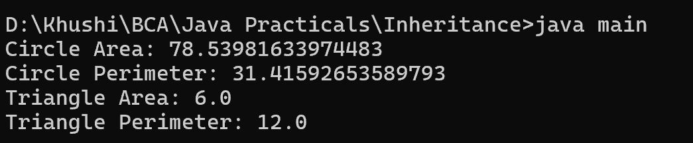

16. Write a Java program to create an abstract class Shape with abstract methods calculateArea() and calculatePerimeter(). Create subclasses Circle and Triangle that extend the Shape class and implement the respective methods to calculate the area and perimeter of each shape.
abstract class Shape {
public abstract double calculateArea();
public abstract double calculatePerimeter();
}
class Circle extends Shape {
double radius;
public Circle(double radius) {
this.radius = radius;
}
@Override
public double calculateArea() {
return Math.PI * radius * radius;
}
@Override
public double calculatePerimeter() {
return 2 * Math.PI * radius;
}
}
class Triangle extends Shape {
double a, b, c;
public Triangle(double a, double b, double c) {
this.a = a;
this.b = b;
this.c = c;
}
@Override
public double calculateArea() {
double s = (a + b + c) / 2;
return Math.sqrt(s * (s - a) * (s - b) * (s - c));
}
@Override
public double calculatePerimeter() {
return a + b + c;
}
}
class main {
public static void main(String[] args) {
Shape circle = new Circle(5);
System.out.println("Circle Area: " + circle.calculateArea());
System.out.println("Circle Perimeter: " + circle.calculatePerimeter());
Shape triangle = new Triangle(3, 4, 5);
System.out.println("Triangle Area: " + triangle.calculateArea());
System.out.println("Triangle Perimeter: " + triangle.calculatePerimeter());
}
}
